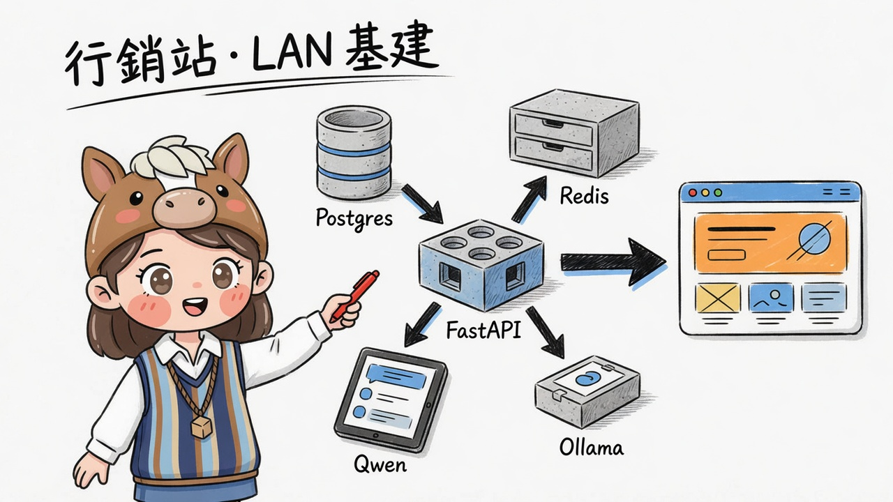
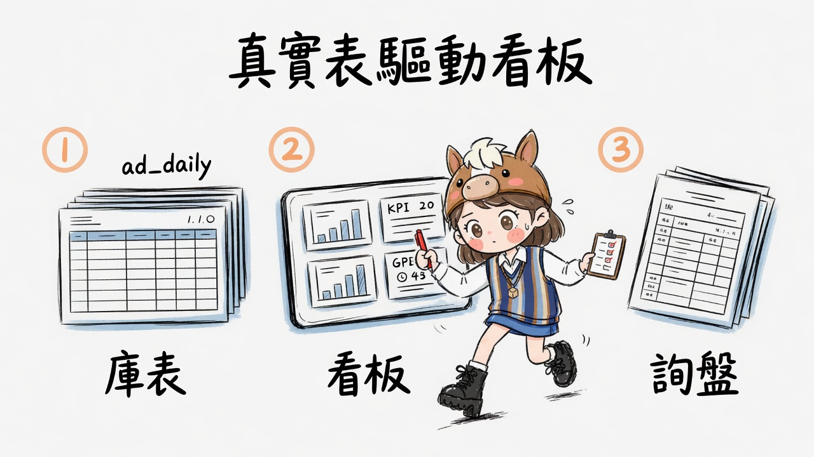
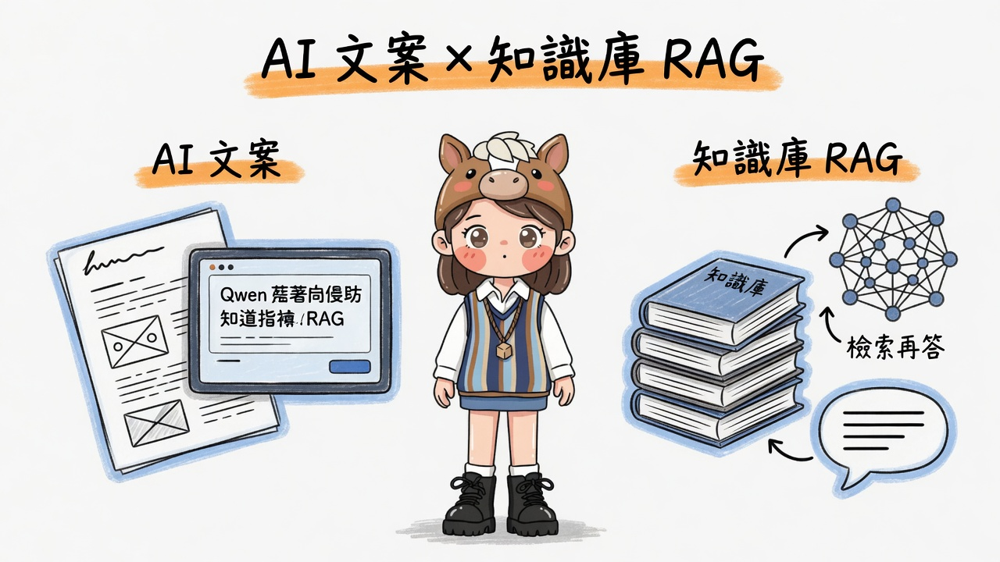

test0719c · CATCH Growth 核心架構說明
行銷成長展示站
真實庫表 + AI 能力
本頁說明 CATCH Growth 核心：落地頁、Postgres 看板、團隊／知識庫、 Qwen 文案、Ollama RAG。配圖 gimi-illustration · quirky-sketch · 繁體。
不含：ai_travel_agent_memory、rag_failure_diagnostics_clinic（另頁說明）。

FastAPI 串起 Postgres · Redis · Qwen · Ollama
① LAN 基建總覽
本機演示埠 :18721 · 服務在遠端 LAN（可改 env）
一句話：瀏覽器只打本站 FastAPI； Postgres 出數字、Redis 快取與索引、 Qwen 寫文案／生成、Ollama 做 embedding 與可選 chat。
| 元件 | 預設位址 | 本站用途 |
|---|---|---|
| FastAPI | 127.0.0.1:18721 | 頁面 + API |
| PostgreSQL | :5432 / catch_crm | ad_daily、計畫、受眾、詢盤… |
| Redis | :6379 | dashboard 快取、seed、RAG 向量 |
| Qwen | :8080/v1 | 行銷文案生成 |
| Ollama | :11434 | tags、embedding、RAG 生成 |
② 真實表驅動看板
落地頁區塊：Hero KPI · 渠道 · 詢盤 · 方案 · 受眾 · 團隊
一句話：看板數字來自 catch_crm 表（如
ad_daily），不是純靜態假圖；展示用文案／證言可走 Redis seed。

主路徑
瀏覽器 #metrics → GET /api/marketing/overview → Postgres（ad_daily / plans / orders…） → Redis 快取（約 45 秒） → 回傳 KPI + 渠道 + 詢盤
頁面區塊
#metrics行銷數據看板#team團隊名冊（seed）#cases案例／證言#audiences受眾包#pricing方案#lead預約表單 →POST /api/leads
常見表（示意）
ad_daily— 廣告日報marketing_plans— 年度／季計畫audience_packs— 受眾包form_submissions— 表單詢盤web_orders— 訂單彙總（若有）
連線失敗時前端可降級顯示 seed／空狀態，不崩頁。
③ AI 雙路徑：文案 × 知識庫 RAG
兩條能力分開，不要混成「一個大聊天框」
一句話： AI 文案＝直接請 Qwen 寫行銷短文； RAG＝先用 Ollama embedding 檢索知識庫，再生成有依據的回答。

A. AI 文案
#ai 表單主題／語氣 → POST /api/ai/copy → Qwen chat/completions → 回傳文案字串
- 用途：Landing 短標、方案介紹、活動文案
- 模型：LAN Qwen（OpenAI 相容）
- 錨點：主站
#ai
B. 知識庫 + RAG
#kb 文章／PG 語料 → POST /api/rag/rebuild（索引寫 Redis） → POST /api/rag/search | /api/rag/ask → Ollama embed + 生成 → 回傳命中段落 + 答案
- 語料：計畫、受眾、產品 KB、競品、FAQ、內部文章
- embed：
qwen3-embedding:0.6b - 錨點：主站
#kb·#rag
知識庫 API 速查
| GET | /api/knowledge | 目錄 |
| GET | /api/knowledge/{id} | 全文 |
| POST | /api/knowledge/articles | 新增文章 |
| POST | /api/rag/rebuild | 重建索引 |
| POST | /api/rag/search | 只檢索 |
| POST | /api/rag/ask | 檢索 + 生成 |
| GET | /api/ollama/tags | 模型列表 |
| GET | /api/team | 團隊 |
④ 系統地圖與邊界
核心 vs 外掛 Tutorial 分開，避免混庫
瀏覽器 :18721 ├─ 落地頁區塊（Hero／方案／案例／詢盤） ├─ #metrics → /api/marketing/overview → Postgres + Redis cache ├─ #team → /api/team → Redis seed ├─ #kb → /api/knowledge* → PG 語料 + Redis 文章 ├─ #ai → /api/ai/copy → Qwen ├─ #rag → /api/rag/* → Ollama embed + 生成 + Redis 索引 ├─ #infra → /api/infra/status → 探測各服務 └─ #lead → /api/leads → 寫入詢盤（演示） 【本頁不涵蓋】 · #clinic / 診斷診所（P01–P12） · #travel / 旅遊記憶助理
本頁檔案
static/core-explain.htmlstatic/assets/core/· 3 張 gimi 圖core-architecture.md
對外講解 60 秒
- 先指基建：五服務各管什麼
- 看板：數字從
ad_daily來 - AI：文案直出 vs RAG 先檢索